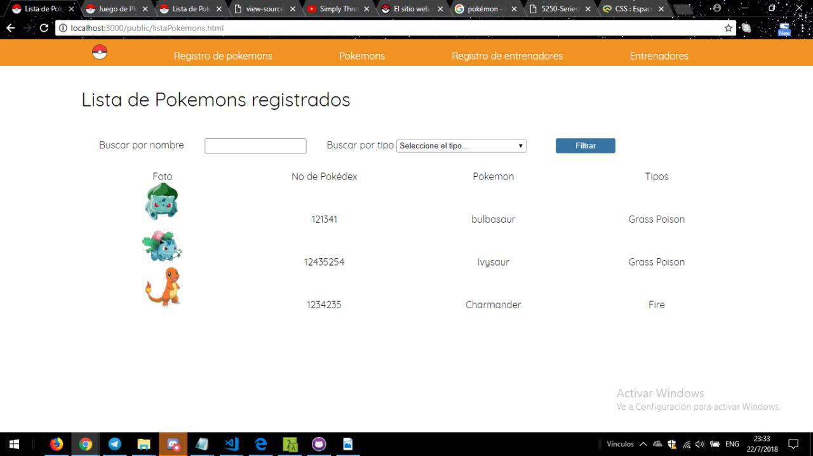

Acepta el reto y probá la aplicación que te presentamos, podrás capturar tus pokémons favoritos.
Sobre Pokémon
Pokémon es una serie de videojuegos de rol desarrollados por Game Freak y publicados para videoconsolas portátiles de Nintendo.
Pokémon nació originalmente con la distribución de Pokémon Verde y Pokémon Rojo en Japón, el primer videojuego de la franquicia. A partir de los videojuegos surgieron las otras grandes ramas de Pokémon: anime, manga y Trading Card Game. Todavía hoy, son los videojuegos los que marcan la pauta dominante, de manera que las anteriores derivan su contenido de los videojuegos.
La app te permitirá tener un registro de los pokemons registrador
